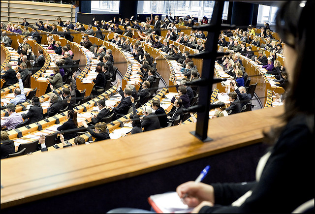

How have your MEPs voted?
How did your representative in the EU vote on fracking? Which parties have supported action on climate change? How wants GMOs and who doesn’t? Use these tools to find out, and let MEPs know the voters are watching.
Climate Fracking GMO